如何判别一台电脑的硬件性能
阅读本文能解决哪些问题
本文看完以后你可以学习到如下知识：
1.给你一台电脑，你能通过获取该电脑的主要参数而知道该电脑能完成什么事情，比如能否打游戏，能打什么游戏，能否完成办公，上网且流畅不卡等等；
2.能够比较几台电脑的性能高低（注意这里说的仅仅是性能，也就是配置高低，不包括什么便携性，散热好坏等等）；
3.能在多台笔记本中找出性价比最高（性能价格比最高不一定代表这电脑好，更不代表这电脑一定适合你）的笔记本，因此本文不能代替笔记本选购贴，只能作为其一部分而存在。
前言
很多人看到电脑配置就发慌，一堆参数一下呼啦上来就傻了。其实这东西最简单了，有初中文化或同等学历水平就可以看懂（我没歧视任何人），各位可能看到我这文章比较长，其实我要是用嘴讲5分钟搞定，加上一些细节也就10分钟内都能弄懂（我多次实际教过别人的，这种入门不要太简单），但弄懂和真正理解不是一个概念，所以可能唯一对大家来说的有难度的地方是不熟悉这些东西。因此不要想着看文字10分钟就能彻底解决问题，还需要各位认真的仔细阅读并事后消化吸收（和上学学习新知识其实是一个道理）。
说这些就是希望大家能树立信心，而且不要急躁，一定要慢慢来。
我对要买电脑的同学特别说明一点：笔记本不同于台式电脑，无脑追求“性价比”毫无意义，按需购买才是王道，所以请那些准备购买笔记本的童鞋记住，配置只是笔记本的一项基础而重要的部分，但不是笔记本的全部。我教会大家看配置后希望大家不要盲目掉进性价比的坑里，形成“无脑性价比论”的观念，只有当你的资金满足不了你追求性价比之外的东西（比如轻薄）或你很想省钱时，才应该追求彻底的性价比，否则多考虑外观，键盘手感，轻薄这些东西也许
注意我说的是不要盲目和无脑追求性价比，并不是反对追求性价比。
一台电脑性能的好坏（台式和笔记本通用）只需要看四方面：CPU，显卡，内存，硬盘。
第一章 CPU的性能优劣
CPU就是处理器，相当于人的左脑（计算脑）。
判别CPU的优劣有三个方法，三个方法的关系是：以方法一为核心和最高优先级，方法二辅助方法一，以增强方法一的判别速度，方法三极不推荐新手使用，问题太多且对新手来说几乎必然被误导。
1-1.看图查表法
步骤1：获取你想查看性能的CPU的完整型号：
例如，你现在在电脑版的京东看到了一台笔记本，如下图所示，
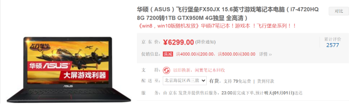
这个时候你将页面向下滚动，到这里：
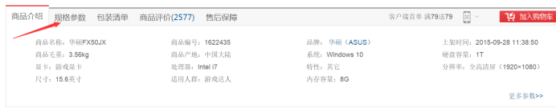
接着点击上图中箭头所指的“规格参数”，就会变成如下图所示，
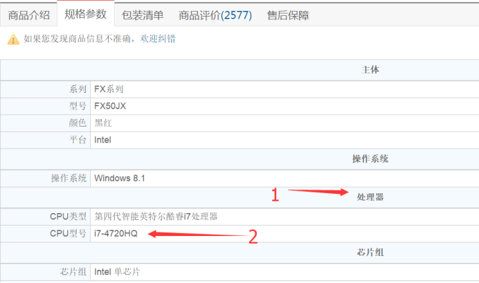
在上图先找到“处理器”这个项目，接着再找到“CPU型号”一栏，我们可以看到上面写的是“i7-4720HQ”，这就找到了CPU的型号（其实还有个更快速的办法得到型号，待会儿说，伏笔1）。同样的，在其他的网上商城或者如中关村这种网站中也可以找到这个信息，比如中关村的信息：
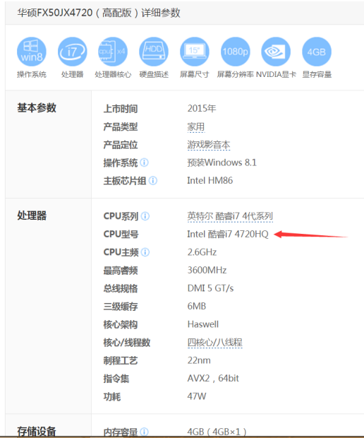
我们可以看到就“处理器”这一项就给了一大堆的信息，然而你只需要提取出“i7 4720HQ”这一组信息即可，也就是CPU型号一栏，其他的参数都可以忽略。
所以这里我再一次的强调，一定要找出具体型号，也就是如上面这样一串英文，而不是泛泛的什么“四代处理器”，“四核处理器”，“酷睿i5”等等（cpu型号命名是有规律的，待会儿再说，伏笔2）。
步骤2：根据获得的CPU型号，在一张名叫“CPU天梯图”的图片中寻找该型号所在的位置（本质就是查字典）：
在使用这张CPU天梯图之前，我们需要先讲清楚“CPU天梯图”到底是什么东西。如我上面提到的那样，这张图各位其实可以当做是一本“字典”，这张图我个人更倾向于称之为“CPU性能排名图”，我觉得这样的叫法远比“天梯图”直观得多。
我知道有人肯定想说一件事，就是“天梯图到底准不准？”；这是一个非常严重的问题，我将这张图称为“字典”，但如果这个“字典”不准确，那么我的这套方法将会被全面推翻。但我打算最后讲完显卡部分后再详细说这个问题。
所以大家现在应该已经知道了这张图是通过CPU型号来给cpu排名的，接下来就好办了，我们拿出刚才已经获得的cpu型号“i7 4720HQ”，在这张图上寻找它的身影，我很快就找到了，在图片中的这个位置（待会再详细介绍天梯图的一些特性和快速查找规律，伏笔3）：
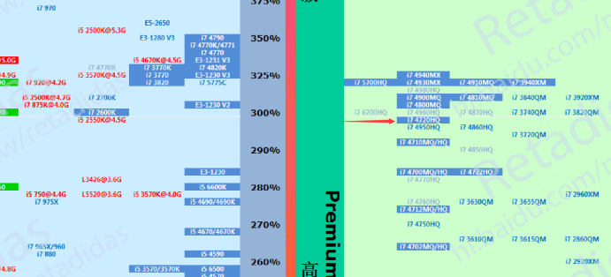
上图红色箭头指向的就是我们要找的i7 4720HQ，接着，我们在i7 4720HQ的位置上从左到右划一条横线，如下图：
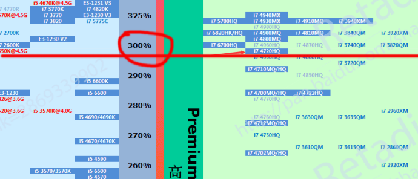
我们看到这条红线大约经过一个百分比“300%”（由于是教学，为了方便我就不那么精确，就当300%。其中该百分比（300%）是相对于某款处于100%的cpu来说的（具体后面再谈）,在这个“300%”的垂直线上还有其他的一些百分比，比如“290%”。可以看到越向上百分比越大。而百分比越大代表综合性能越强，此外能够比较多个cpu之间到底强多少（这也就告诉我们在上图红线上方的CPU综合性能都比i7 4720HQ要强；再拓展一下，也就是说处于本图越上方的CPU理论综合性能越强）。比如在上图中，i7 4720HQ的上面一点，也就是325%处有一款cpu叫“i7 5700HQ”，我们就可以立马知道，i7 5700HQ强于i7 4720HQ，而强多少百分比有两种计算方式：
计算方法 | 文字说明 | 计算公式 | 计算说明 | 注意事项 |
直接比较法 | i7 5700HQ比i7 4720HQ性能领先大约8% | (325-300)/300=8% | 小学数学知识 | 8%是两款cpu直接性能比较相差，而25%是相对于某款cpu的结果。请务必搞清楚这两者的区别。 |
相对比较法 | 相对于图中处于100%处的某款CPU来说，i7 5700HQ领先i7 4720HQ性能达25% | 325-300=25% | 两个百分比相减 |
PS：我第一次写本文的时候用的是相对比较法，直接相减，结果没说清楚产生了歧义，因此引来了很多网友的质疑和误解。因此修改后的本文专门在此增加一个表格来解释。另外感谢发现此处有歧义的网友们。
回到正题，到了这里，如果大家都有认真在看，相信已经大致有点底了，甚至有聪明的读者已经可以举一反三了。
我们现在就来举一反三：刚才我们知道了i7 4720HQ是300%的性能，也就是这台电脑：

的cpu性能是300%，接下来我们要开始对比，我们又看上了一台电脑，比如这台：
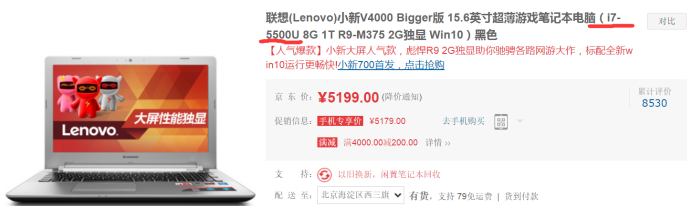
首先我们要举一反三的是一开始我提到的快速获取cpu型号的方法（收回伏笔1）：注意上面图中我划红线的那一串数字，聪明的同学我相信马上就反应到了，这串英文是“i7 5500U”，和刚才的“i7 4720HQ”好像啊！没错，我们只要看标题，就马上知道了这款电脑的CPU型号。第二步我们开始查表（如何快速找到这款cpu的位置我依然不着急说，先假设我们会快速查找，伏笔3），可以看到，这款cpu在图中对应的位置是这里：
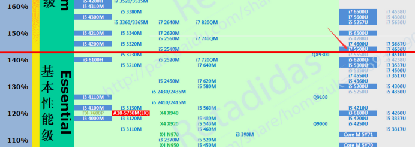
同样的划横线，得到的性能百分比大约是145%（同样为方便解说而估算）。我们马上就知道i7 4720HQ强于i7 5500U且性能强了大约106%【计算方式为：（300-145）/145=1.06（约等于）】。我这里继续埋伏笔，其实这两个cpu型号我不是随便选的，待会儿还有用（伏笔4）。
如果上面的方法大家都掌握了，那么我相信无论给大家多少台电脑，只要能知道这些台电脑cpu的完整型号，那么弄清楚这些电脑之间的cpu谁强谁弱已经基本不是问题了。
主要的思路掌握以后，下面就是提高效率的时候了，接下来将收回伏笔3。CPU天梯图是非常大的，下面是完整的一幅天梯图，但我不需要大家现在仔细去看这张图，因为这张图是被压缩过的，放大了也不清晰。我现在放这张图只想让大家知道这图中型号众多，必须要有一个技巧才能快速定位某个cpu的位置，也就是需要一个“查字典”的方法，否则各位就只能大海捞针了（该图的清晰版大图的下载地址后面再给）：
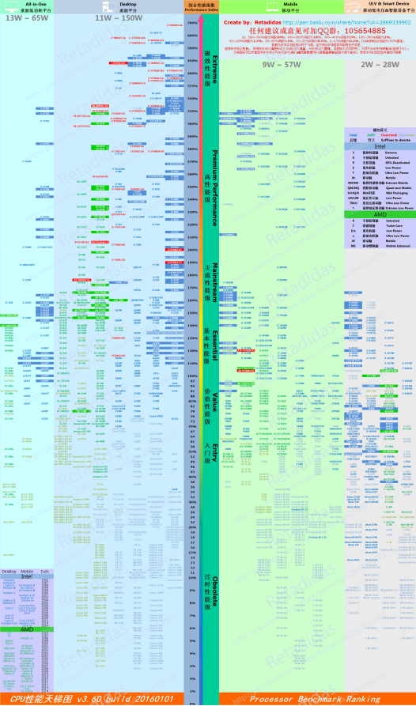
现在开始讲查表技巧，我们先看表头：
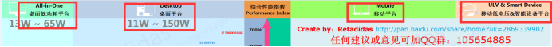
红色方框框出的文字代表该块区域内的CPU是属于哪类平台的。可以看到，以“综合性能指数”为分界线左边是都属于桌面平台（也就是台式电脑平台），右边都是移动平台（也就是笔记本，平板电脑和手机平台），每个平台所在的那块从上到下的竖直区域（背景颜色不同如桌面平台背景色是浅蓝色）中的所有cpu都是属于本平台的。
继续以刚才的两款cpu为例子，由于我们看的是笔记本，所以这两款cpu一定出现在图片的右侧区域中，一下就缩小了50%的查找范围。但是还不够，我们还要进一步缩小查找范围，于是乎，为了能快速找到某款cpu的位置，性能识别法的第二个方法来了。
1-2.型号规律法
必须要强调的是，该方法的作用是让大家在天梯图上查找某个型号时能快速缩小范围，也就是该方法是为了使方法1（“看图查表法”）更好用而存在的。请各位新手尽量别单独使用该方法，否则就会像下面我将要举的反例一样了。
为了说清楚型号规律法，我需要大家了解cpu的型号的每个部分的具体含义。
在CPU的领域，目前我们能买到的cpu就只有intel（英特尔）和AMD公司的产品（三星之流由于过于羸弱因此根本不要考虑）。而这两家公司对于型号的命名都有规律：
1-2-1.intel公司
系列 | 赛扬 | 奔腾 | 酷睿 | 至强 | ||||
I3 | I5 | I7 | ||||||
定位与历史 | 诞生于1998年8月，定位处于家族最低端，多年以前就是给奔腾提鞋的小弟，很多型号都是奔腾的某个型号的部分参数砍一半后直接而来。 | intel现阶段依然存在的四个系列中资历最老的，也是以前的龙头老大，把持主流民用市场的低中高端产品线，06年酷睿出现后现已沦为当年赛扬的处境但仍比赛扬定位略高。 | 当前民用市场的中流砥柱，产品线覆盖低中高三段，接替老大哥奔腾的新一代系列。现在在intel产品线中有着90%以上的占有率。 | 与赛扬同年而生，但不同的是至强定位最为高端，为服务器级别，也就是高于酷睿系列，近年来有少量型号进入民用级市场，引起了一阵购买狂潮（E3神教万岁）。 | ||||
型号示例 | N3150 | B980 | I7 4720HQ | E3 1230 v3 | ||||
理论排名 | 至强>i7>i5>i3>奔腾>赛扬（排名不绝对，具体以最新的天梯图为准） | |||||||
图片贴纸（注1） | 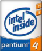 | 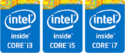 | ||||||
注1：有一个小技巧：通过笔记本上的贴纸图案可以快速识别该机的cpu是哪个系列的。另外由于每代的cpu ，英特尔都会修改贴纸的设计样式，所以以上图片仅供参考，不过样式虽然每年都变，但是关键的信息都是一样的，比如肯定有标“intel”这一串字母，系列肯定会标明比如“core i7”，如果出现只写 “intel inside”的话那基本可以肯定为低端货。
补注：intel还有安腾和凌动系列的处理器，但这两者和绝大多数普通用户关系不大故此处不再做过多的无用解释。
以上这些系列大家当故事看看就好，接下来就开始细说命名方式。
以上系列命名方式都要学吗？不是的，对于小白来说，抓住重点才是关键，否则信息量一下子太大很多人可能接受不了。什么是重点？酷睿系列就是唯一要了解的重点，其他系列比如赛扬理都不要理，更不需要去了解其命名规律，那是爱好者才需要学的，除非你想塞爆你的大脑。
继续以i7 4720HQ为例子：
参数 | I7 | 4 | 720 | HQ |
解释 | 系列 | 代数 | 具体型号 | 后缀 |
快速判别法 | 一般来说i7>i5>i3 | 数值越大产品越新（不一定越好） | 一般同代下该数字越大性能越好 | 指明该CPU的一些特性（见下图） |
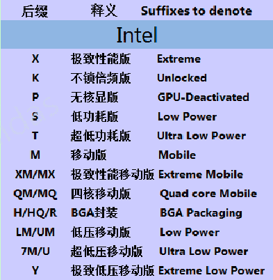
上面的表格是把一款处理器的型号进行拆解，每个部分都有其规律。
这张表请各位务必记住，记不住也要保存到手机或电脑内，以便需要的时候进行查询。
至于表格下面这张紫色的图是没必要记忆的，该图是我从cpu天梯图上截取下来的，天梯图上就有。当然，可能有很多人也看不懂紫色图内这些专业术语是什么鬼东西，我挑几个最最常见的来解释一下：
后缀 | 解释 | 是否可更换 |
M | 普通的笔记本CPU | 可能可以（注4） |
XM/MX | 笔记本平台高端CPU | |
QM/MQ | ||
H/HQ | 笔记本平台不可更换型CPU，后缀为HQ的和MQ之类一样也是高端 | 不可以（注2） |
U | 笔记本平台低压（注3） | |
Y | 多用于平板电脑，少量用于笔记本 |
注2：上图中提到带有HQ与H后缀的叫“BGA封装”，意为此cpu焊死在主板上不可更换。但如果真想换是有可能可以换的，但具体的更换要求偏离了本文内容，因此不在此详谈。
注3：低电压不一定代表性能不好，XM的CPU不一定比M的CPU强等等，请各位尤其是新手们再次记住，一切请以天梯图为第一准则。
注4：仅仅是可能，因为存在某些特殊的以“M”结尾的CPU也是BGA封装。具体如何识别不在本文讨论范围内。
（伏笔2回收完成）
介绍完了，不知道大家晕了没有。我们现在不着急往下讲，因为肯定有不少人还没消化刚刚给的表格。所以我们先来实战一下，将型号规律法应用在看图查表法中。
继续拿出已经多次使用过的i7 4720HQ，现在正好是告诉大家如何在10秒内从庞大的天梯图揪出它的时候了：
1.前一章的末尾已经说了，这是笔记本，因此先在天梯图中排除左半边的全部型号；
2.接着看后缀来更具体的锁定该cpu属于哪个平台；我们看到该cpu后缀是“HQ”，也就是说这是笔记本标压平台的CPU，目标锁定在了这一列上，这样一来范围再次缩小了25%：
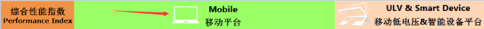
3.看是哪个系列的cpu，发现是i7，也就是intel的cpu，于是：
3-1：直接锁定天梯图中蓝色的那些型号（为了方便查找天梯图的作者用蓝色标记intel的cpu，绿色标记AMD的cpu，另外还有一些其他颜色的含义也都在天梯图的右上角有说明，如下图），这里又排除了一大票绿色标识的cpu，范围更小了；
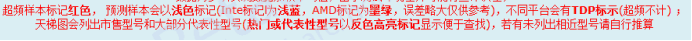
上图中超频和TDP不知道什么意思的就别管，本文不会做非常详细的介绍。而预测样本需要注意一下，属于预测的cpu误差可能略大，要注意（不过也说明该类cpu比较冷门或年代久远）。
3-2：i7表示的是高端CPU，因此基本上会出现在天梯图的上半部分（高性能级）。
经过这一套流程下来，我们很快就能锁定这个范围：
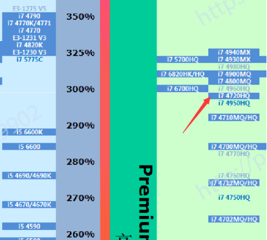
而到了这一步，请各位认真的看一下上图红色箭头指向的i7 4720HQ，在与它同一列的上下方的那些cpu型号，有没有发现规律？还是刚才的那张intel型号细分表的一部分：
参数 | 720 |
解释 | 具体型号 |
快速判别法 | 一般同代下该数字越大性能越好 |
还记得这列吗？“同代下该数字越大性能越好”，是不是上图中i7 4720HQ上面有比如i7 4800MQ和i7 4900MQ，这两个也是4代cpu，比较后三位即900>800>720，所以i7 4800MQ和i7 4900MQ排在i7 4720HQ的更上面。
但同时上面这张表中还用红字强调了“一般”，这是因为i7 4720HQ的下面就紧挨着i7 4950HQ。各位去看看，发现了吗？
同样是i7 ，同样是4代，而且950>720，但是性能反而更差。所以只能说“一般同代下后三位数字越大越好”。这就是我本节开头时提到的“反例”，即本节教大家的型号规律法不是给大家单独用的。
（伏笔3回收完成）
刚才我们已经用快速查找法找到了i7 4720HQ的位置，现在我们用相同的方法来复习一下，寻找i7 5500U的位置，继续强化看图查表法和型号规律法的配合使用的熟练度：
1.确定我们的cpu来自一款笔记本，因此肯定在图片的右边；
2.看到后缀“U”知道是低压版，因此在下图中的这一列中寻找：
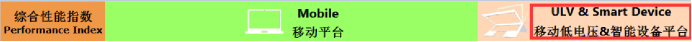
3.而既然是I7处理器，那明显是在这一列的高端位置；
4.最后根据同代下后三位数字越大一般越好的规律，找到上下区域内相似的型号比如下图中的i5 5200u和i7 5557u，这样进一步框选更小的范围，从而最后找到，如图：
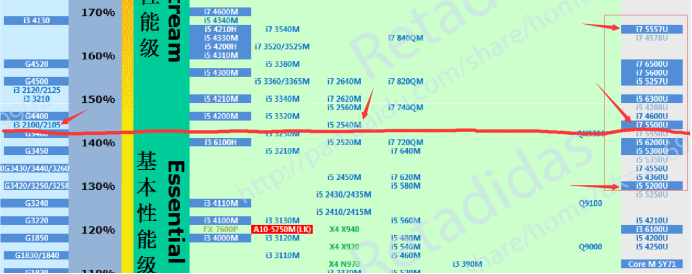
不知道大家发现没有，这两款cpu都是i7（i7 4720HQ和i7 5500U），但是性能天差地别，这明显的告诉我们：
1.型号规律法提到i7>i5>i3，但是并没有说明i7之间的差异；
2.获取cpu型号的时候一定要获取完全型号（强调很多遍了），如果不看后缀，只看i7 4720和i7 5500，那么用型号规律法立刻就会出现误判：变成i7 5500>i7 4720的情况。而如果只说i7那根本就无法下判断。
然而事情还没结束，上图中我还划了一条线，同时增加了两个箭头，指向的分别是一款桌面级CPU和一款笔记本标准电压（后缀为m）的CPU。可以看到：
I7 5500U=i5 2540M=i3 2100<G4400（G4400在i3 2100上面且其属于奔腾处理器）
怎样，是不是有种想骂娘的赶脚？才建立起来的i7>i5>i3>奔腾体系变成了i7=i5=i3<奔腾，世界观都崩坏了。这个故事再一次告诉我们：型号规律法确实能很快下判断，但准确度完全靠信仰，只有其配合天梯图使用才能达到效率和准确的最佳平衡。
当然，我这里还得再次重提，有人一看低压u这么辣鸡就准备黑低压，君不见图上i5台式就能达到笔记本i7，奔腾都能干笔记本的i5？所以强弱看和谁比较，你真要黑低压u，那我可以用同样的理论黑笔记本的标压，因为笔记本标压i7也就台式标压i5的水平，这样黑没完了。因此不要盲目黑低压CPU，够用且价钱合理就行。而且别忘了低压u有低功耗的优势，这正是笔记本所需要的。
此处也是最后一个伏笔（伏笔4），我为什么专门选i7 4720HQ和i7 5500u来当例子，和上面i7 4720HQ与i7 4950HQ的比较一样，这两个cpu要单独用型号规律法比较也是作死的行为。
请新手们务必把1-2节到目前为止的知识都搞清楚，尤其是我举的i7 4720HQ和i7 5500u具体如何在天梯图中进行查找的那几步思路。显卡篇要教大家的东西本质都和前面讲的一样。所以对目前有点晕的同学我这提前提供天梯图的下载地址供大家复习巩固知识：
http://pan.baidu.com/s/1bbK9ki
该地址包括了全部的天梯图，但各位目前只需要下载cpu天梯图就好。
好的，废话就不再重复了，我不知道各位是否忘了，刚才其实我们是在说CPU的公司，结果我就说了一个intel，然后直接展开讲了型号规律法的应用。而完全没有提到AMD公司（我不会告诉大家其实我在写这篇文章的时候确实忘了AMD）。
1-2-2.AMD公司
这公司的产品我其实没啥好说的，甚至于我一直强调如果你是一个新手，请忽略该公司的产品，因为该公司的产品经常被奸商利用来骗人（懒的新手们可以赶紧跳过本小节了）。但既然提到了，我就说一下，该公司在桌面级产品线上十分混乱，以至于我现在都没完全记住这些乱七八糟的系列（但这完全不影响我能进行判断，毕竟看图查表法）。
在笔记本平台上该公司主推的是APU（其实就是带有集成显卡的CPU，该公司自己起了个名字罢了），下辖四个系列并且定位从高到低端分别是：
A10>A8>A6>A4
完整型号比如A10 5750M，下面是命名规律的解释：
型号细分 | A10 | 5 | 750 | M |
解释 | APU的最强系列 | 代数 | 详细型号 | 笔记本平台 |
大致判断法 | A10>A8>A6>A4 | 数字越大越新（不一定越好） | 一般同代下数字越大越好 | 具体请看下表 |
同样的，天梯图上对该公司cpu的后缀有如下解释：
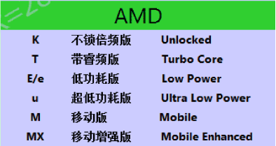
另外还有一个FX系列，此系列有点像英特尔的至强 ，此系列在台式机上比较常见。详细的型号规律和APU系列差不多。
，此系列在台式机上比较常见。详细的型号规律和APU系列差不多。
另外我可以明确的告诉大家，在图的右半边也就是移动平台上，AMD产品在100%以上的少的可怜，且最强一款（FX 7600p）的默认性能也才120%，而APU系列的最强A10 5750M通过极限超频（超频就是提高cpu的频率，用业内玩笑话叫艹到冒烟）也就120%了，看看120%旁写着什么？“基本性能级”。所以不是我埋汰这公司，其当前在移动平台实力确实有限。
Ps：这款A10-5750M标红且后面带括弧的“LK”就是所谓的超频样本（“LK”是天梯图作者加上去的，代表超频），不超频这货就在下方大概108%这个位置（下图中也有）。
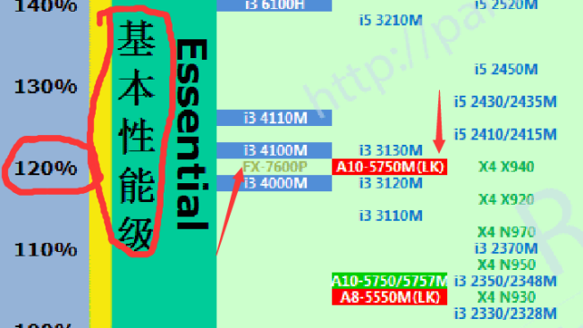
型号规律法到这里就完全介绍完了。
最后再一次强调，型号规律法新手们不要单独使用，只能在用看图查表法时配合使用。该方法是辅助技能，不能独当一面。否则到时候出现性能严重偏差的情况可别怪我哈。
1-3.参数估计法
1-3-1.著名的论断
本方法我相信每一个买过手机，电脑，笔记本等产品的人一定都使用过或听说过。什么，你不相信我，说没听过？好，举个例子：
“本电脑采用最新四核处理器，比原来的双核处理器性能提升达50%以上！”
怎么样，听没听说过？这就是著名的四核吊打双核论，也就是这第三个方法：参数估计法的一个实际应用的例子。
我知道有些人可能现在开始笑了：不就是这方法嘛，好简单，我会了，不用教。
对此我表示：呵呵呵呵呵呵呵呵。
还有另一些人开始慌了：我刚才辛辛苦苦学了这么久，怎么就四核吊打双核了？
别笑，也别慌，我们先来做几道题目，请大家按照自己认为的那样进行选择就好。
1-3-2.来做几道题目吧
单选题：
1.目前有两款处理器M1和N1（型号未知），仅知道M1的核心数为四核，N1为双核，问：哪一款CPU性能更加强劲？（）
A.四核的CPU更强 B.双核的CPU更强 C.无法判断
2.目前有两款处理器M2和N2（型号未知），仅知道M2的主频为1.5GHz，N2为3.0GHz，问：哪一款CPU性能更加强劲？（）
A.1.5GHz的CPU更强 B.3.0GHz的CPU更强 C.无法判断
3.目前有两款处理器M3和N3（型号未知），仅知道如下信息：
CPU | M3 | N3 |
核心数 | 4 | 2 |
主频 | 1.5GHz | 3.0GHz |
问：哪一款CPU性能更加强劲？（）
A.M3更强 B.N3更强 C.无法判断
请认真思考一下这三道题，并给出你心目中的答案，各位可以随意百度，但不要询问他人，问人就失去意义了。
1-3-3.陷阱，自打脸与题目答案
我不忙着说答案。先问问大家，各位在做题的过程中是否有感觉到一些违和感，可能前两题还不觉得，但是大家看到第三题的时候是否有一种“哪里不对劲”的赶脚，从而重新去审视前两题呢？
如果你三题中选择的答案有A或B的话，那么请做一下第四题：
4.目前有两款处理器M4和N4（型号未知），仅知道如下信息：
CPU | M4 | N4 |
核心数 | 4 | 2 |
主频 | 1.5GHz | 3.0GHz |
缓存 | 3MB | 6MB |
问：哪一款CPU性能更加强劲？（）
A.M4更强 B.N4更强 C.无法判断
不知道有多少人发现我在这下了一个连环套。是的，这种题要多少有多少，你如果还能在第四题中在A或B内进行选择，那我还能出下一题，下一题又会再出现一个新的参数。如果第四题你还能继续在A和B中作选择，我就需要问你一个问题：
你学过物理吗？
要是你回答“yes”的话，那我只能遗憾的告诉你：你的物理老师已经哭晕在了厕所，请赶紧的关掉本文，去向你的物理老师道歉。
为什么？因为物理课做实验时最先教的一个实验方法，也是最重要的一个实验方法，叫“控制变量法”，控制变量法告诉我们，比较之前首先需要把变量控制为1个，刚才的四道题目，到了第四题的时候已经出现了3个变量。。。。。。接下来还需要我说吗？
物理我个人是初二就学的，也就是说这是初中知识。。。。。。。所以，如果说各位在前两题因为不懂cpu有这么多参数所以选了ab，但到了第三、四题，应该有所觉察了，否则真的是愧对你们的物理老师。
不止这一点，如果你在前两题都在ab中选择了的话，到了第三题，你就立马自己打自己脸了。因为第一题我没说频率已知，第二题更没说核心数。因此第三题你无论选什么都是要自己打自己脸，只是被第一题或第二题打脸的区别。
你要是还不理解所谓的控制变量法，或者你没学过物理，那我打个比方，各位现在拿四核和双核做比较，等同于给你两辆车，告诉你A车的轮子有四个，B车有两个，但你敢说A车就一定比B车跑得快吗？当然不能，因为比如引擎的优劣你没告诉我，这无法下判断，如果你真要下判断分别A车与B车的优劣，那我可以告诉你，你选A车，我就说A是轮椅，B是摩托车；你选B车快，我就告诉你A是F1方程式赛车，B是自行车。怎样，是不是很无耻？其实这里就是我一直在强调的看型号，看型号，型号在本例中就相当于车的种类。
到了这个地步，甚至都不需要什么控制变量法了，任何正常人都可以看出乱用这个参数估计法说出什么四核吊打双核的人都是。。。。。以后这种类似的言论根本就不用理。
故以上4题答案全选C。
特意花大篇幅讲了这么多，主要就是因为目前看核心数多寡，频率高低来判别cpu优劣的错误观念深入人心，已经到了不得不仔细解释的地步了。而真正的参数估计法根本就不是你们想象的这么简单，下图分别是我自己电脑的cpu和显卡的信息图，各位可以大致数一下，CPU的参数还少一些，显卡的参数，就呵呵了，希望新手们看完下面这两张图能让你这辈子都别碰参数估计法（此处可以让大家复习一下，找一下我的cpu在天梯图上的理论性能是百分之几。 ）：
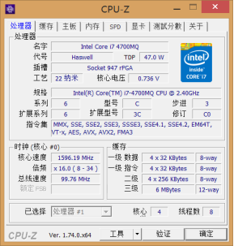 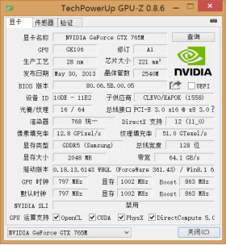
所以小白们千万别去看这些参数来判别这类硬件的性能，否则和自杀是同等概念。
1-3-4.为什么不推荐AMD平台的CPU
首先借用前辈的一句话：世界上本没有坑爹的笔记本，只是其定位和价格偏离了其应有的水平，从而出现了坑爹。AMD平台的笔记本电脑就是这种境况。
之前我说AMD的cpu经常被拿来忽悠人，比如一群物理没学好的（亦或是学好了但故意的）奸商利用amd的多核做文章，打着“AMD真四核”的旗号把羸弱的amd平台的笔记本吹上天然后高价出售，专门骗那些小白，这就是我不推荐amd的原因之一。“四核大于双核”这种欺骗性宣传实在是太可怕了。但说白了搞出这些真四核在懂的人眼里反而说明amd的实力弱，只能靠堆频率和核心数来取胜。在当前的CPU制造原料为硅的情况下，通过堆积频率来提升性能会带来巨大的发热量，而笔记本平台散热天生短板，于是乎我们就看到amd在移动领域全线溃败（当然这只是一方面的原因） 。
如果各位还有了解的话，桌面平台amd在刚上千元的价位就动用了真8核cpu，而intel只有高端的几千的cpu才用的真8核。但intel的cpu在市场的占有率上却有着绝对的优势（目前基本是73开），打的amd根本抬不起头来，如果amd真的这么猛，四核吊打双核，何至于在市场占有率上被按在地上打？
因为有同学问到了，所以这里稍微提一下intel的超线程技术，该技术也就是大家可能常听见的比如“双核四线程”之类的东西。这个超线程技术是把双核模拟成4核（因此叫4线程），因此是假四核，奸商们吹鼓的“AMD真四核”也是来源于此。可是如我上面所述，只看单一参数而不考虑控制变量法来使用参数估计法去判别性能都是狗屁，因此假四核不一定输给真四核。
1-3-5.参数估计法的总结
综上所述，这第三个方法，新手们就别用了，真的费力不讨好。只要以图查表法为主，型号规律法辅助看图查表法，相信各位都能快速的认清楚各个处理器之间的差距。
1-3-6.没有补全的拼图
现在我们已经解决了如何分清几款cpu的性能差距的问题，接下来还有一个非常非常重要的问题，就是：我不知道这款cpu是否足够我使用，毕竟性能越好理论价格越贵。即我们虽然知道比如i7 4720HQ比i7 5500U强了106%。但这106%对于大家是个什么概念，我没说。这个我打算先放一下，等介绍完其他部件以后再来一起说。
第二章 显卡性能的优劣
2-1.显卡简介
显卡负责处理图像，分担CPU的压力，相当于人之右脑（图像脑）。
显卡分为集成显卡，独立显卡两类。独显就不废话了，老式集显集成在主板上，现在早已被抛弃，因为intel和AMD都在他们自家的很多CPU内内置了显卡（买CPU送显卡），故现在是核心显卡的时代。
显卡类型 | 集成显卡（核心显卡） | 独立显卡 |
存在位置 | CPU内 | 独立存在，直连主板 |
芯片生产公司 | intel，AMD | AMD，NVIDIA |
公司常见称呼 | intel=英特尔 AMD=按摩店，农企 NVIDIA=英伟达 | |
显存使用 | 共享内存 | 有独立显存 |
性能优劣 | 集成显卡虽整体落后于独显，但是在低端独显领域有部分集显已可战胜独显 | |
严格来说集成显卡不等于核心显卡，然而由于板载集显的消失所以现在集显=核显。
专业显卡不在本文的讨论范围内，专业显卡由于没有专门的天梯图（对，显卡也和CPU一样使用天梯图看性能），只能按照网络测评和一些跑分来计算。另外对于想要买专业显卡的同学，给一句忠告，只有当你把cpu和内存都提到极限以后，还有钱的话再考虑专业显卡，而且配备专业显卡的笔记本相当少，基本都是高端笔记本，另外专业卡打游戏性价比不要太低（真想用专业卡打游戏的同学我提供了专业显卡的游戏性能天梯图，下载地址在1-2-1节的末尾）。
另，别搞混了，专业显卡和普通显卡（也就是游戏显卡）是按照用途分区的，而独显和集显是由于存在的物理位置不同而区分的（只是分类，没说集显一定弱于独显之类的）。
2-2.显卡判别法
2-2-1 看图查表法与型号规律法
显卡也和CPU是同样的识别套路。一毛一样。
所以方法1我不再废话，和CPU同理，就是换张图罢了（图最后会给的）——我本来是想这么说的。。。。然而不少人和我说还是讲讲吧，于是我只能老实介绍一下了：
首先我们继续来用一开始的电脑做例子，这是其京东商城的页面：
其实上图已经如我教大家看CPU的时候一样已经直接写了显卡的型号。不过还是按部就班来吧，我们同看CPU型号一样查看“规格参数”，只不过查看的栏目换成了“显卡”，于是获得了显卡的型号（这里写显示芯片是一种更为严谨的说法），即GTX950M；
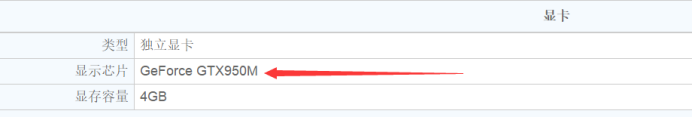
接着看图查表，此处用的是显卡天梯图，而且是笔记本吧的版本（显卡天梯图有好几个版本，不同版本有略微区别但本质都一样，后面我再详细介绍）：
我们和CPU天梯图一样先来看表头：
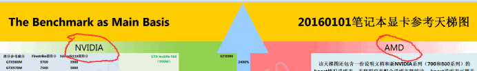
只有两种显卡NVIDIA和AMD，于是我们知道左边是英伟达公司的产品，右边是amd的。可能有机智的小伙伴要问了：还有intel呢？这个待会儿说。
我们现在虽然通过表头知道了左边N卡右边A卡，但是不知道GTX950m是哪家的显卡。于是需要按照CPU识别法的惯例，请出“型号规律法”进行辅助：
型号规律法中命名规则我直接截取显卡天梯图上的解释（来自AMD吧的天梯图，绿色字体的是英伟达的显卡，红色是amd的显卡）：
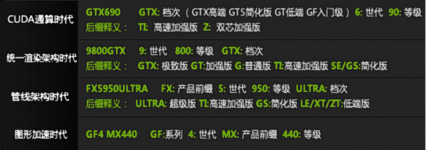
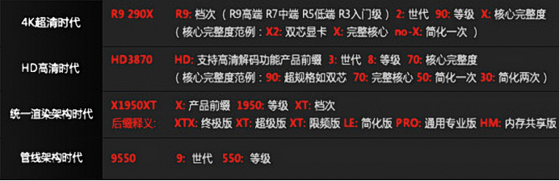
看一下上图中绿色的英伟达的图片：图中左边有什么“CUDA通算时代”，“图形加速时代”的文字，具体是什么鬼你们别管，只需要知道该图越向上时代越接近我们现在，即从年代来看“CUDA通算时代”就是目前的主流时代的命名规则，而“图形加速时代”是多年以前的老旧卡用的命名规则。
聪明的同学肯定已经发现了，在“CUDA通算时代”一栏就有我们要找的和GTX950m及其相似的型号“GTX690”，于是我们就能通过上图知道：
参数 | GTX | 9 | 50 | M |
含义 | CUDA通算时代，高端卡 | CUDA通算时代的第9代 | 等级 | 移动平台 |
判别 | 根据上两幅图来判别 | 数字越大代数越新 | 一般同代下数字越大越好 | 其他后缀参考上图 |
小技巧：一般n卡的等级中“50”属于中端，像GTX690中的“90”基本处于旗舰级别的显卡，如图：
同理如果是“20”比如920那就是低端，而且直接看数字有时都不用看GTX，因为一般上了“50”等级的卡都是GTX，这些小技巧都对查表时帮助很大的。
为了让大家更有印象，我将刚才的cpu的型号命名规律再搬过来，大家对照着看一下：
参数 | I7 | 4 | 720 | HQ |
解释 | 系列 | 代数 | 具体型号 | 后缀 |
快速判别法 | 一般来说i7>i5>i3 | 数值越大产品越新（不一定越好） | 一般同代下该数字越大性能越好 | 指明该CPU的一些特性（见下图） |
认真看一下，是不是很像呢？所以这里同样需要大家掌握，至少做到上面的表和图保存到手机电脑内以便随时查看。
我们继续来看显卡天梯图，为了方便解说，我这里暂时使用笔记本吧天梯图的简版（简版删减了非常见型号，对新手比较友好，但简版和完整版的百分比不一样，我在显卡部分的教学中出现的性能百分比全部参照完整版天梯图）：
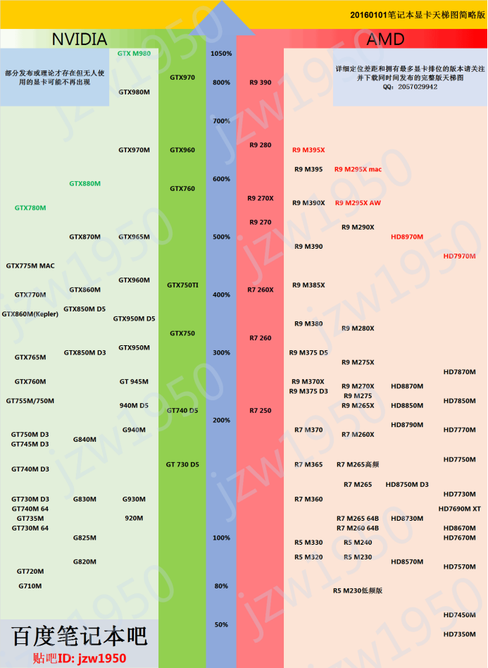
大家认真看一下上图，笔记本吧版的天梯图有不少规律：
1.性能指数（百分比）左右两边紧挨着的颜色更深的绿色和红色的区域是台式电脑平台的型号，其他浅色区域是笔记本平台的型号；
2.笔记本区域内同一代的显卡都在同一列上，比如GTXm980，GTX960m都在同一列，这点我觉得相比其他的天梯图来说是一个亮点（显卡天梯图吧的版本也有这个特色）；
3.一般来说同代下后两位数字越大性能越高（刚才的表格其实已经提到了）。
有了这三点，各位在上图中找出GTX950M的位置就非常简单了，此处留给大家来找吧。
留一个悬念吧，上图的红圈处不知道各位是否发现了两个GTX950m，不同的是一个后面加了“D5”，由于这些东西是给打游戏的同学准备的，因此此处详细的解释我放到6.4节内，喜欢打游戏的同学们不要错过哦。
PS：一个非常重要的小细节：请大家注意一下上面这张简版天梯图，在100%性能的左边，找一下这四个型号的显卡：GT730m，G830m，G930m，920m。一般来说英伟达的笔记本低端显卡都是以GT？？？！（？代表数字，！代表后缀）的形式出现，完整的名称比如GT730m应该叫NVIDIA Geforce GT730M。但从8代显卡起，笔记本的低端显卡上英伟达取消了其名字中的“GT”，也就是变成了现在的NVIDIA Geforce 930M而不再是原来的NVIDIA Geforce GT 930M。而很多用户、厂商并没有注意到这点，在宣传或用词时依然使用老叫法，如依然叫“GT930M”。我想说的是，低端显卡上看到如“GT930M，Geforce 930M、930M、G930M”其实都是一个东西，而高端的显卡命名没变，还是比如“Geforce GTX 960M”。
英伟达笔记本显卡完整型号的查询我这里提供英伟达的官网地址，各位可以去看一眼最新的显卡的完整名称：
http://www.geforce.cn/hardware/notebook-gpus?keys=&field_gpu_series_value=All
2-2-2 参数估计法
参数估计法我不用说了吧，比cpu还多的参数，对小白来说完全是吃力不讨好的方法。此方法部分放弃。
等等，部分放弃？也就是说还要用？对的，有极个别参数是可以看的，这和CPU完全不能看参数略有不同，但由于这些参数主要是针对那些需要玩大型3D游戏的用户，故此处暂时不做没必要的解释，同样将其留到6.4节再介绍。
2-3.注意事项
注1：了解过桌面级显卡的同学会发现显卡有很多品牌，比如什么蓝宝石，铭�u，七彩虹。但那些都不是核心厂商，独立显卡端真正能生产显卡芯片的只有英伟达和AMD，cpu上的集成显卡当然更是只有英特尔和amd这两家了。之所以出现这么多独显厂商，是因为amd和英伟达开放了一些参数比如频率、显存容量等，允许这些下游厂商定制这些参数，但核心技术都不在这些下游厂商手里，因为显卡芯片才是关键。这里再次证明只看显存，频率等个别参数来决定显卡性能是毫无前途的，真有这么简单，全球能上得了台面的显卡公司就不会只有英伟达和AMD了。什么？有人要和我强行扯VIA？我只想知道VIA什么时候给我电脑的声卡准备一下win10的驱动（VIA在声卡领域比较出名）。
注2：其实，笔记本上的显卡有少部分也和注1提到的台式显卡一样是有厂商定制的，其中的翘楚非联想莫属（对，就是这个家长喜欢，小白向往的“国产良心”品牌），搞出各种“联想定制版”，“联想OEM版”专用显卡，城会玩。比如在爱好者中大名鼎鼎的GT640M LE，本质是GT555M联想版，直接改个名字拿来用。而按照英伟达官方的定位，标准的GT640M理论强于标准的GT635M，更强于标准的新GT630M，但这货连新GT630M都干不过。。。。。最近有一条尚未被证实的消息，联想即将推出搭载GTX970M联想版的笔记本，从消息中给出的规格来看，这货连GTX965M能否打得过都成问题，各位待会儿可以自己去天梯图上找一下标准的GTX970m和GTX965M分别在哪里，所以真是“良心”的不得了，请各位同学“务必认清”该品牌【友情提示：如果本段（即注释2）你看的一头雾水说明型号规律法你没掌握】。
注3：关于多显卡，amd自家的多显卡（集成显卡+独立显卡）可以协同工作（术语叫双卡交火）达到1+1的效果（至于1+1能否达到或超过2看实际情况），但即使1+1也很难在同价位打倒英伟达的一块独显。所以不要理会amd在笔记本平台的多显卡交火，按照amd的独显算排名即可，当然你想两个一起算的话可以在独显的排名上追加15个百分点 （虽然这样非常不严谨，但我就是黑amd了怎么样，有理有据好咩），其实然并卵。再有什么“3卡交火”是鲁大师之类的国产软件搞的乌龙，根本没那回事。英伟达独显和intel的集显目前暂不支持协同工作（DX12的另说，不在本文讨论范围） ，也就是独显和集显同时只能有一个在工作。
（虽然这样非常不严谨，但我就是黑amd了怎么样，有理有据好咩），其实然并卵。再有什么“3卡交火”是鲁大师之类的国产软件搞的乌龙，根本没那回事。英伟达独显和intel的集显目前暂不支持协同工作（DX12的另说，不在本文讨论范围） ，也就是独显和集显同时只能有一个在工作。
注4：本条是给要买台式显卡或使用台式电脑的同学看的，非这两类人可以不用看：台式机的显卡可能需要看一些参数，比如频率，流处理器（SP）数量，显存等，而天梯图给的只是标准版（公版）的性能排名，所以要买台式显卡的童鞋们需要多看几个参数了。但请别慌，如果你不追求极限，那么你不需要知道这些参数是什么，只需要知道：首看显示核心（即显卡型号），接着再看流处理器数量更多的，然后如果此显卡超过了1千元，那么优先看显存大小，否则优先看频率，最后可以看看显存类型（GDDR5>GDDR3，多说一句，核心显卡则是DDR3）等。但这种非公版的，提升了某些参数的显卡一般卖的相对于直接用公版显示核心的显卡要贵一些，因此简单来说还是看显卡型号就行，更具体的不在本文的讨论范围内。再有，除了显存以外，其他参数要比较只能比较相同公司的产品，比如你不能拿n卡的频率和a卡的频率比，千万别这么干。
注5：算用集成显卡打游戏的同学比较苦逼，这个连笔记本吧的天梯图作者都说了现阶段没办法将其放到图中，所以他的天梯图是没有集显的，但其他天梯图还是有的。
以intel的集显为例，首先同一型号搭配不同的cpu时某些参数会出现差异；其次集显由于使用的显存是内存，因此内存的情况也会影响其性能；最后就是由于集显是集成在cpu内部的，因此cpu和集显同时工作时就免不了共用一些资源，简单来说就是cpu和集显会互相影响。除此之外集显在跑分上估计做了优化，跑分高的不行但实际等等，总之就是集显性能受到使用环境和其他部件的影响，其理论性能几乎没有参考价值。
所以天梯图中集显的排名仅供参考，实际偏差较大。所以不要再问什么集显到底有多强了，没办法给答案的。但我能说的是，不打游戏或者打一些弱鸡游戏比如LOL，CF等集显还是毫无压力的，只是特效的问题（想了解具体的情况请看6.4节）。
如何识别某显卡是集显：当前时代下intel的集成显卡都是以HDXX00（x代表数字）命名（如HD6100）；而对新手来说amd公司全部cpu都被排除了故不需要了解其集显命名。
最后截取笔吧天梯图作者的原话：
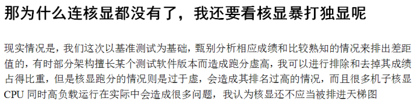
第三章 天梯图的特性
3-1.时效性
不管是cpu天梯图还是显卡天梯图，都需要制图者不断更新，否则对于新手来说，当面对新显卡时只能用型号规律法来进行判别，所以请各位尽量寻找最新版本的天梯图，当然对于看网页版的各位本帖我会尽力更新的，如果我停更了，请自行去寻找作者的更新帖，下面我会有详细介绍作者，大家百度一下就能找到了。
3-2.准确性
准确性来自于以下几方面：
3-2-1实力
我这几年都用这些个天梯图（其实之前也说了，我一直没去记amd那些乱七八糟的cpu系列就是这些个图的锅 ，强行甩锅有理有据，这也说明这图确实好用）帮人选购电脑什么的，都没出现过什么偏差，到目前为止没人跑来和我说我选的电脑性能不足或我发现某款主流cpu或显卡出现严重的差错（别找我求推荐求比较，很累的，我认真选一台笔记本就得一天），另外这东西其实也没办法保证100%准确，但是误差在允许范围内就好。
3-2-2利益问题
利益问题我觉得是无稽之谈，因为前面提到了生产核心的只有那3家厂商，cpu就不说了，基本没有定制的可能性，用户自己超频算是“定制”；而笔记本的显卡几乎都是直接拿核心来使用的（讲的专业点叫公版显卡，非公版就是上面提到的比如蓝宝石公司拿来公版的核心然后提高一点频率什么的，笔记本上比较少见），显卡天梯图和cpu天梯图都是给的核心比较（也就是公版性能比较），既然是公版，那么要想作假那只能是比如英伟达给点钱给作者让他标的高一些。。。。
3-2-3作者的偏好
作者喜欢某张显卡所以标高一些。。。我真是见过这么想的人，我也是服了，我无话可说，你要这么想就这么想吧。
3-2-4地板有点脏，我需要清洗一下
我估计肯定要有人说我以上言论均为洗地啥的，要扣帽子就随意吧，你开心就好。反正我讲的是我所知道的事实，我所知道就是这些图至少在我写这篇文章的时候还是很靠谱的。信与不信随你，你当我本文全程都在给天梯图打广告就对了，反正这图帮我很多打个广告又何妨。其实何止是打广告，简直是吐血推荐，这东西对小白大白乃至大神都有帮助，但是我看了很多教程却始终没有人详细介绍这些图怎么用，大多数教程都是“丢图跑”，我以前教别人的时候也是丢图跑，但事实证明对于很多新手来说，丢图跑的结果就是他们在实际使用的时候找一个型号需要很久很久。于是我后来才决定花大篇幅来讲解天梯图的规律特性以及快速查找的办法，毕竟天梯图作为“字典”，你不告诉别人怎么“查字典”，那这字典真心毛线用都没有。
3-3.其他特性
作者提到的特性我就不废话了，笔吧天梯图中自带一个说明文档，里面详细说明了天梯图的特性及要注意的问题（刚才第二章末尾我就截取了一小段），请各位等下务必去看一眼。
说一下天梯图的版本方便以后大家自己去查找：CPU天梯图只有一个版本，至少我目前只发现有这一个，那就是来自笔记本吧的retadidas（自称“小七”，吧里称为“7神”）：
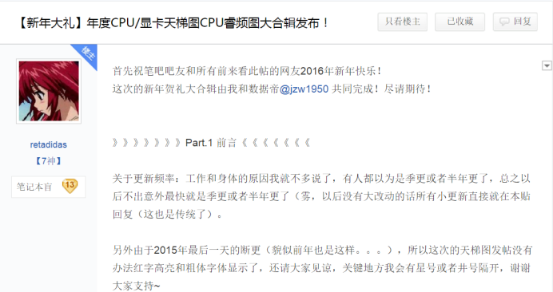
而显卡天梯图和cpu天梯图不同，显卡天梯图有好几个版本，如下图所示：
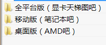
这三个版本主要区别在于侧重不同：
1.笔记本吧的版本出自被称为“数据帝”的jzw1950之手，更有cpu天梯图的作者七度协助修订。既然出自笔记本吧，那天梯图自然侧重于笔记本端的显卡，另附有部分桌面平台的型号，这也是我文本推荐首先使用的天梯图；
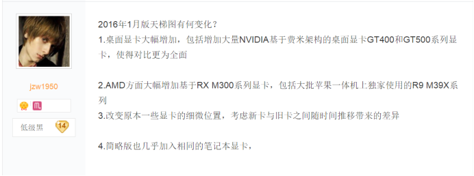
2.显卡天梯图吧的版本来自于“花飞羽落”，侧重于“全平台”，即他的天梯图和cpu天梯图一样是包含着全平台，包括桌面平台和移动平台，我个人推荐需要详细的桌面平台和笔记本平台对比的同学们看这张图，因为更全面；
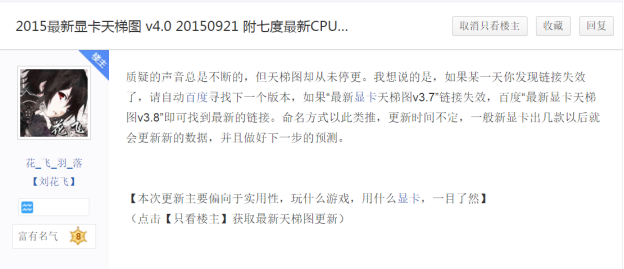
3.AMD吧的版本由隐退已久的秋刀鱼半藏制作，其天梯图专注于桌面平台，他的天梯图也是我个人最早接触到的显卡天梯图。
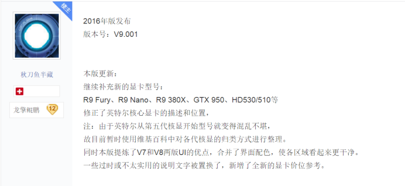
他们的天梯图中都有联系方式，大家可以去给辛勤劳动的大神们捧一下场，另外值得一提的是在我写本文之时也就是2016的元旦，他们都更新了新版本（花飞羽落最新是15年的12月16号更新的，其他都在元旦更新），所以目前这是最新的天梯图了。
离线版我都打包好了，一开始的链接就有，网页版的话下载链接在此：
http://pan.baidu.com/s/1bbK9ki
3-4.作业
既然有了天梯图，那么不要着急，我先出几道题让各位复习一下前面所学知识：
Ps：以下题目中需要使用的显卡天梯图以笔记本吧的完整版本（不是精简版）为准，互相之间的比较用直接比较法。
问题1：请在天梯图中分别快速找出i5 4210H和i5 4200u的性能百分比，并计算出两者的性能差距。
问题2：请在天梯图中分别快速找出GTX965M和GT610的性能百分比，并计算出两者的性能差距。
问题3：有一台电脑，其参数如下图所示，请判别该电脑所携带的独立显卡和GTX950m相比谁更强，强百分之几？
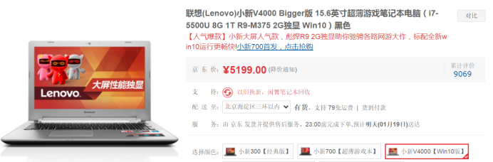
以上题目的答案与解析在本文末尾。
第四章 内存的优劣
在笔记本平台内看内存很简单，只需要看容量就行，越大越好。当然，内存的好坏其实在于读写速度的高低，但是先不说笔记本平台的一些限制，就是没有限制，对于95%以上的笔记本用户来说，这个速度的优劣不会体现在你的使用中。所以只看容量就好。
习惯性的多嘴：组装台式机时看内存的其他参数大多数时候是为了兼容性，一般只有用核显玩游戏的用户和超频爱好者等一些特殊人群才会特别在意内存的性能（速度）。
第五章 硬盘
和内存一样硬盘性能看读写速度，读写速度越快越性能越好，容量只是装东西用的，相当于口袋的大小。
ps：硬盘的传输速度各位别去仔细了解，区分速度只需要知道机械硬盘是拖拉机，固态硬盘是飞机即可。
稍微讲一下这两种硬盘，两种硬盘的原理区别什么的我这不和各位废话。简单来说要想日常操作大幅度减少卡顿，首先考虑使用固态硬盘（SSD），这才是卡顿最大的元凶，而不是去考虑什么cpu，显卡或者内存。买不起固态的话折中来说机械硬盘（传统硬盘，即HDD）最少也得要7200转的才能有效减少卡顿（笔记本7200转机械硬盘的功耗和噪音远没有你想象的这么严重），但彻底解决还得靠固态。
任意的容量达到128GB的固态硬盘性能都远强于笔记本端的所有机械硬盘（发烧友组磁盘阵列等的除外，其实机械硬盘组raid也很难抗衡那些低端固态，代价也太高）。
混合硬盘：我发现很多同学搞错了混合硬盘的概念，真正的混合硬盘是一块硬盘内既有固态硬盘的部分也有机械硬盘的部分。而很多人说的“混合硬盘”其实是单独一块的固态硬盘与单独一块的机械硬盘组成的双硬盘，严格按照术语是不能叫混合硬盘的。再有我及其不推荐混合硬盘这个畸形儿，除非不得已否则推荐大家用双硬盘的组合。
第六章 如何知道性能是否足够自己使用
非常重要的章节，前面的章节都只能告诉你分别什么硬件好，比另一个硬件好多少，但从没说过这个“好”到底够不够各位使用。我接下来给大家一份表格，根据各位的需求，按照这个表格选择。
6-1.合理搭配的重要性
电脑的四个主要部件之间的关系类似木桶原理（在我看来只是类似），木桶定律是讲一只水桶能装多少水取决于它最短的那块木板，电脑也是一样，主要的那四个部件必须达到使用者需要的最低要求，一旦有一块短板，那么要想在使用中做到流畅就是不可能的，其他硬件性能再高也白搭，请务必谨记，我经常听到有人吐槽电脑卡进而怪电脑cpu不好，显卡不好的，这些都是没理解木桶原理（也可能是不了解电脑硬件）导致的。而我的这个“类木桶原理”和原版的区别在于不同的软件对于电脑各个部件的要求并不一样，比如某游戏可能需要最强的显卡（价值8000元）才能运行，而该游戏对于cpu的要求仅仅是普通级别的（价值1000元），也就是对每一块木板的“等级”有不同的要求。所以结论就是“首先整体要达到最低要求，其次根据需求情况将剩余的钱投入到最关键硬件上”（此处不是让大家盲目堆配置）。
所以除非你是土豪，否则在配置的搭配上要合理，钱要花在刀刃上。
6-2.理论配置表（不包括游戏）
保值性：下面给出的配置中最低配置大约能满足3年的使用不出现瓶颈（此估计都不绝对，因为有时科技发展速度可能超出预计），而推荐配置大约4~5年（其实到了第四年很多人都换新的了），并可应对突发的对电脑性能的高需求，代价是价格更高，请认真考虑。
以下配置均不包括打游戏，游戏党请先在下面的选项中选择一个后我再单独给你们讲如何根据游戏选配置（4399之类的小游戏和网页游戏除外）。
最低配置需求，在没钱的情况下首先要保住这些性能：
最高使用到的性能 | 日常上网看视频，玩网页游戏，用办公软件，学习编程 | 业余爱好者或大学生将要学习使用各类专业软件（注3） | 工作用编程 | 普通使用虚拟机，多开虚拟机的内存改为12GB | 普通网络直播（包括直播打小游戏） | 半业余或强度不高的专业软件使用者 （注4） | 高强度专业软件使用者 （注4）（其实这点性能根本不够塞牙缝） |
性能要求 | 极低 | 一般 | 中低 | 中 | 中 | 较高 | 极高 |
CPU（注0） | 80% | 120% | 150% | 150% | 170% | 200% | 300% |
显卡（注1） | 任意集显 | 150% | 任意集显 | 任意集显 | 200% | 230% | 600% |
内存（注2） | 4GB | 6GB | 6GB | 8GB | 4GB | 8GB | 16GB |
硬盘 | 500GB 7200转机械硬盘（注5） | ||||||
注0：百分比指代的是cpu天梯图（七度的版本）的综合性能指数，意思为“至少达到该指数才能满足需求”，参考的版本为20160101的v3.6版（版本不同指数可能会改变）。
注1：由于显卡天梯图版本众多，此处的百分比以笔记本吧即jzw1950的完整版天梯图为准（jzw1950还有一个简版的，只有笔记本常见的型号，参考的天梯图版本为20160101版，均已在上面打包提供下载地址），很多小白来和我说什么“天梯图最高只有700%……”我只想说“请看清楚我这里使用的天梯图的版本”。另外“任意集显”指的是可以不需要独显，即杀鸡不用牛刀。再有就是显卡天梯图和CPU天梯图的百分比没有可比意义，显卡天梯图和CPU天梯图的百分比没有可比意义，重要的话说两遍。
注2：内存是可以自己加的，所以买来的笔记本达不到我上面指定的容量也别慌，自己加的成本和难度相当低下。
注3：专业软件包括各类制图，绘图，音视频编辑，3D建模，调色等等软件。
注4：专业需求强烈推荐台式，如果实在需要笔记本，请在本文结束后再去6-4节所指向的文档或链接中查看有关“散热”的小节，散热对于你们这些需要高性能笔记本进行高负载工作的人士而言非常重要，请务必去看一下，不要嫌麻烦，这是对自己负责。
注5：因为最低都只能买到500GB的5400转机械硬盘，因此我就写高一点了。
如果你发现你的预算能够不仅能买到最低配置而且还有余钱，那么可以考虑如下配置或者保持最低配置而把钱用在其他方面，比如外设，或者买一台更漂亮轻薄的笔记本。
推荐配置：
最高使用到的性能 | 日常上网看视频，玩网页游戏，使用办公软件以及其他普通办公用 | 业余爱好者或大学生将要学习使用各类专业软件或编程学习者 | 工作用编程 | 普通使用虚拟机，多开虚拟机的内存改为16GB （注6） | 普通网络直播（包括直播打小游戏） | 半业余或强度不高的专业软件使用者 | 高强度专业软件使用者 |
性能要求 | 极低 | 一般 | 中 | 中 | 中 | 中高 | 极高 |
CPU | 100% | 170% | 200% | 200% | 250% | 280% | 无底洞（注7） |
显卡 | 任意集显 | 250% | 任意集显 | 任意集显 | 250% | 250% | 专业显卡 |
内存 | 6GB | 8GB | 8GB | 12GB | 8GB | 16GB | 32GB |
硬盘 | 1TB的7200转机械硬盘+128GB的SSD（尽量上固态，240GB更好）（注8） | ||||||
注6：先不论打游戏，虚拟机如果需要使用上强度的话CPU，甚至显卡都可能需要大幅提高，并且请务必加一块至少240GB的SSD，否则多系统同时运行时等着卡死吧。
注7：优先追求CPU的性能强劲并保证内存容量的情况下，还有大量资金剩余的推荐上搭载专业显卡的笔记本，否则根据资金富余程度选择600%，850%或1300%的游戏显卡。不过1300%就已经差不多了，再高的话可以考虑买低端专业卡（请自行查阅资料保证你用的软件有相应的专业卡的优化且该优化仅针对专业卡而游戏卡没有，否则浪费钱）。此类应用在高强度的情况下基本需要无脑堆配置，没办法。
注8：不管是固态也好，内存也罢，基本都可以自己加或换，所以购买的时候没有也无所谓，更具体的请参考：
http://tieba.baidu.com/p/4259326169?see_lz=1 ，或等我有空再写一篇文章。
工作编程和专业软件高强度使用者请注意：你们还有一个更加具体的办法确定自己需要怎样的配置，那就是查询自己公司或自己学校实验室等等正在使用的电脑的普遍配置，在学会了我前5章的内容后很容易就能通过其他电脑的配置确定自己该买一台怎样配置的电脑，此方法非常有效且一定准确。
6-4.游戏理论配置表
本章节开始将会介绍游戏的理论配置需求情况，这又是一个大问题，因此我单独准备了一个（篇）文（水）档（贴）。
首先，离线版的同学们。我在文章开始部分中提供的下载链接内就已包含了本文；
网页版的读者请直接打开此链接：（预留）
或者直接下载离线版，我发表该文的时候全部都已写好。
第七章 一些问题的回答
1.我只是买个电脑罢了，为什么要学这么多东西，为什么要学这些处理器命名规则？我以后又用不到？我记这些东西头都记大了。
答：一台笔记本几千乃至上万块钱，您真是土豪，钱可以随便花，再者这些东西其实没多少，比记忆什么数学公式，语文古文，政治理论好的不要太多。
2.你为什么不讲重点？
答：我讲的都是重点，只是因为个人需求不同具体可能会有差异，我能说的是我讲的这些都是重要的，很多人常见的东西，没有废话，只是可能小部分知识（比如一些注释）不适合你罢了，但这些并不占大篇幅而且我都有提到比如“非以下xx类人士可以跳过此节”，而重点中的重点我都有用红字标出。
3.我就是想伸手，求推荐，求大神帮我看看这两台电脑哪台好，为什么不接受？
答：如果是笔记本，那么我告诉你，买笔记本不是看几个参数就能决定好坏，也不是“性价比万岁”就能买，我认真给你们推荐一台适合你们的电脑需要花费半天到1天的时间，而且这类工作乏味无聊。真看参数看所谓的“性价比”的话各位何不去买神舟，神舟怎么不称霸电脑界？神马，你说神舟质量有问题？呵呵，你以为我会告诉你神舟和联想的一些机型可能是一个工厂设计生产出来的吗？搞清楚OEM和ODM以后再和我谈质量。而如果是台式，我可以帮你看看，因为台式以配置为主相对好不少。
4.为什么不直接告诉我答案，还解释这么多，比如直接告诉我双核不一定比四核弱就完事了，剩下的我可以自己去思考，比如下面这位同学（该同学看完我的文章后发表的观点）：
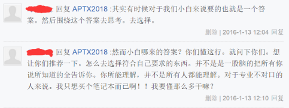
答：4-1：“告诉答案然后自己围绕答案思考”我真的差点没笑出声来，实践无数次证明，比如如果我不解释双核和四核的差别，小白们去实体店后被奸商成功转型的概率99%以上，最常见的直接否定答案的说法就是“网上那些人都是瞎说，我卖电脑这么多年我还不知道？明显四核比双核好，网上那些人不懂装懂”好的，这一套下来无数小白就死了，这就是给答案但不讲原理最后加上新手自己思考的后果，原理都不懂思考啥？不懂1+1=2怎么思考出3+2=5？真有多少人是这样的天才？
4-2：“并不是一股脑的把所有我知道的都告诉小白”；别人的教程我不知道，但你真有好好的看本文？比如内存那一章，有没看到我用红字标出“内存只看容量”，你以为我真的一股脑的都告诉你你不需要的东西？你都不相信我告诉你的都是精简过的内容，那你何来的自信相信我告诉你“四核不一定强于双核”的结论是正确的？事实上很多小白就是这么死的，因为我们不认识，你们不相信我很正常，你们又不懂原理，最后只能考虑“谁更值得相信”或者其他的东西，结果就是像4-1一样被骗，而我用物理知识解释，权威性就不一样了，奸商要是强到能推翻物理定律他就不在这卖电脑了。
以上对事不对人，再有，如果自己有基础，求推荐能事半功倍，没基础只会越求越乱。
最后，我的教程是免费的，自吹一下，授人以渔我觉得比授人以鱼强（其实是我懒）。
追加：全文总结
1.第一章和第二章主要介绍cpu和显卡，介绍了他们的作用，分类以及如何判别性能的优劣，重点在于如何判别性能优劣上；
判别优劣的方法有三种，看图查表法，型号规律法，参数估计法：
我要求小白实战时只用看图查表法（即cpu和显卡性能“笔者”唯一指定判别法），该方法中心在于两张图：cpu天梯图和显卡天梯图，在这我花了大篇幅解释如何看这两张图；
型号规律法是为了更好的使用看图查表法才进行的介绍，不推荐单独使用；
参数估计法我根本就不希望新手使用在cpu的识别上，为此还用物理定律进行大篇幅的解释；而显卡的识别仅针对游戏玩家才能使用而且是有限制的使用（6-4节介绍）。
2.第三章讲的是天梯图的特性，主要是介绍各位辛勤劳动的天梯图作者，帮他们宣传一下顺便让大家分清各个天梯图的区别和联系等等，本章末尾还给大家留了作业以便复习。
3.第四章主要介绍内存，只需要看一个参数就是容量，其他一概不管；只要能使用，不同的内存的性能差距在各位的日常使用中根本感觉不出来。
4.第五章介绍硬盘，10多年没有在速度上有突破的机械硬盘是日常应用卡顿的元凶，最先需要更换，而由于性能强大的固态价格较贵，因此推荐双硬盘组合以解决日常卡顿和容量不足的问题，打比方就是机械硬盘是大载客量的客机，固态是只能上几个飞行员的战斗机，而要想做到载客量大又飞得快还便宜的飞机还需要顶尖研发厂商的不懈努力。
5.经过前5章的学习，大家应该能做到对单一的硬件比较能分出好坏（如cpu和cpu比较，显卡和显卡比较）；但是综合的硬件比较就不一定会了，比如一台电脑cpu好，显卡差，一台电脑cpu差显卡好，其他的包括价格都一样，那么哪台好？
6.第六章为全文的关键章节，本章就是来解决第5点我提出的综合性能比较问题的，我给出的唯一答案是一切看需求，需求是爸爸，一切配置等等都服务于需求。所以在我眼里，常见的各类问题比如：
“哪台电脑性能价格比高”
“哪台电脑配置更好”
“某电脑性能是否足够我使用”
“玩游戏或用某软件需要cpu好还是显卡好”
…………
这些问题都是建立在需求上才能回答的。如第5点我提到的那两台电脑，对于需要cpu强劲的人来说就是前者性价比更高，对于需要显卡强劲的人来说就是后者配置更合理，更好，这个是因人需求而异的。，所以你要是拿一台电脑问我哪个更好，我肯定回答不了你的。
因此，本章的作用就是你搞清你自己的需求后我来告诉你根据你的需求你需要一台怎样（哪方面更好比如需要cpu特别好）性能的电脑。
再三强调：看完本文只能在性能上选出适合自己的电脑，而对于笔记本来说远远不是只看性能就能买的，还有各种可能你需要但没注意的部分与细节，限于篇幅我这简单举几个例子：大到散热（6-4节已经细说），隔热，屏幕，键盘，音响，重量（便携），外观（很多女生的重点指标）乃至售后服务；小到有无USB关机充电，散热出风口位置是否合理，有无预装系统等；这些是本文基本没提到也不是全部人都需要但肯定有人需要的项目，本文近介绍了所有电脑用户都需要的“性能”这一环节，不要搞错了哦。
附录：3-4节题目的答案
问题1：请在天梯图中分别快速找出i5 4210H和i5 4200u的性能百分比，并计算出两者的性能差距。
答：（1）i5 4210H：
1.看到i5，知道是intel的cpu；
2.看后缀H，由1可知在intel的后缀中找，如下图，了解到这是移动端的cpu；
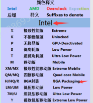
3.由2可知锁定移动平台：
4.型号i5可知处于i7之下，i3之上的中端显卡，而且是4代（最新的是6代），年代不算久远，所以很有可能处于天梯图的“主流性能级”区域：
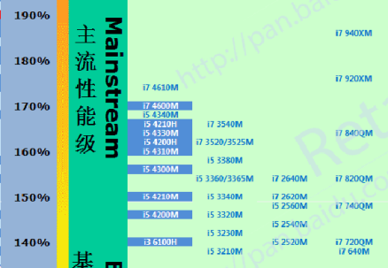
5.上图范围中根据“同代下后三位数字越大性能一般越好”规律很快找到约167%。
（2）i5 4200u处于120%的性能位置，查找略（提示：该cpu是低电压平台中端）。
（3）性能差距：（157-120）/120=39%（约等于）
问题2：请在天梯图中分别快速找出GTX965M和GT610的性能百分比，并计算出两者的性能差距。
答：（1）GTX965M：
1.GTX明显是英伟达的高端显卡，排除右半边区域；
2.而且是9系最新的高端显卡；
3.后缀m代表移动平台，因此排除左边的深绿色区域；
4.型号是65且由2综合可知处于图片中上部分，而中上部分型号少故从上往下找；
5.由2找到9系显卡的那一列，在图中的中上部分位置大约1020%的地方找到。
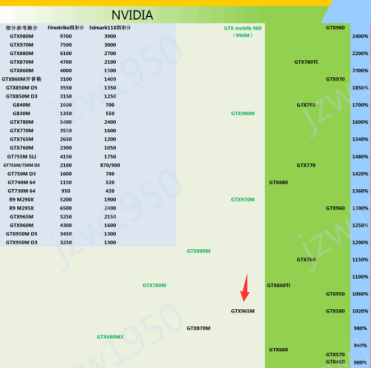
（2）GT610：120%性能水平，查找略（提示：图片中下部分的台式显卡区域）。
（3）性能差距：（1020-120）/120=750%
问题3：有一台电脑，其参数如下图所示，请判别该电脑所携带的独立显卡和GTX950m相比谁更强，强百分之几？
答：1.在习惯了a卡命名习惯之后上图中直接可以看出“R9 M375”就是显卡型号；
2.这是一款amd的显卡，图中左边全部排除；
3.带M的显卡，移动平台，排除右边区域的深红色部分（台式显卡区域）；
4.代数为最新的3代，R9为高端显卡，而75按照习惯可能是中高端；
5.在3代的那一列中寻找，范围是图片中的中高端；
6.因为高端型号较少，从上往下找；
7.最后锁定这个范围，发现有两个显卡都符合条件：
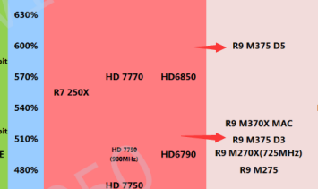
怎么办呢？具体的我留到6.4节内细说，此处简单解释：d5表示gddr5显存类型，d3表示ddr3显存类型，在其他条件相同的情况下gddr5显卡强于ddr3显卡（控制变量法）。至于该机器采用的是d3还是d5显存类型我们需要看商家的宣传以及网络测评等来寻找，该机我在网络测评中找到了其显卡信息图：
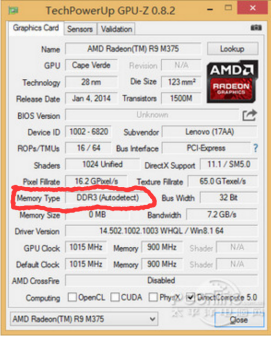
上图可能有很多人看不懂，没关系，只需要看红圈中的部分，翻译过来就是“内存类型：DDR3”（显存就是显卡的内存，所以在显卡信息检测软件内叫“内存”）。故该机用的是性能较低的r9 M375 D3显卡（果然是“良心”想，坑得要死），性能指数510%。
（2）GTX950M各位查图的话也是有两个版本的，一个默认版，一个D5版，此处我没有后缀因此是默认版，性能大概620%左右。
（3）性能差距：（620-510）/510=22%（约等于）。